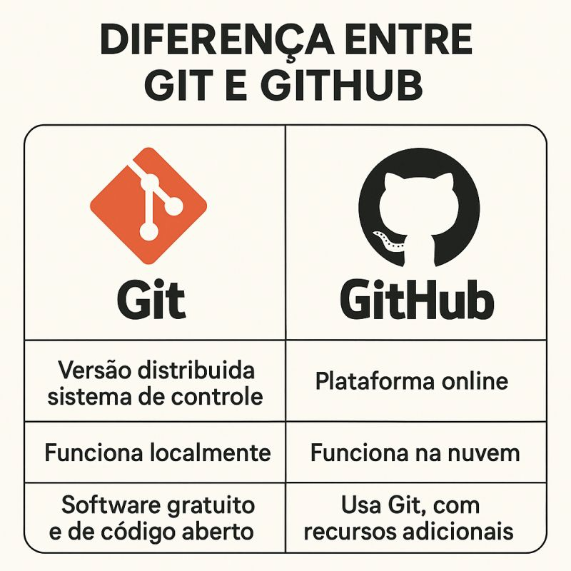

Melhor apresentação do dia - Do caaos ao Commit
Organizando projetos com Git & GitHub
O que é Controle de Versão?
Por que ele é tão importante?
- üìú √â um sistema que registra todas as mudan√ßas feitas em um projeto ao longo do tempo.
- ⏳ Permite voltar a versões anteriores, comparar alterações e saber quem fez o quê.
- üö® Sem ele, um arquivo sobrescrito ou perdido pode causar grandes problemas, principalmente em equipe.
- ⏪ Com o Git, é só voltar à versão anterior – como um "Ctrl+Z" gigante para todo o projeto.
O que é Versionamento de Arquivos?

Breve Histórico do Git
Criado por necessidade, para o caos do Linux
- ü߆ O Criador: Linus Torvalds (o mesmo criador do Linux), em 2005.
- üí• A Motiva√ß√£o: O kernel Linux precisava de um sistema rápido, seguro e distribu√≠do. Ferramentas anteriores eram lentas ou centralizadas.
- üéØ Os Objetivos: 1. Ser rápido, 2. Ser distribu√≠do (cada dev tem uma c√≥pia completa), 3. Garantir a integridade dos dados.
Linus Torvalds

O criador do Git e do Linux
Diferença entre Git e GitHub
üíª GIT
A Ferramenta de Versionamento
- ⚙️ Sistema de controle de versão distribuído.
- üñ•Ô∏è Funciona localmente no seu computador.
- üîë Software gratuito e de c√≥digo aberto.
☁️ GITHUB
O Serviço de Hospedagem
- üåê Plataforma online para hospedar reposit√≥rios Git.
- ☁️ Funciona na nuvem.
- ⭐ Usa Git, com recursos adicionais (colaboração, issues).
Analogia: O Git é o Word (edita), o
GitHub é o Google Drive (armazena e compartilha).
Diferença entre Git e GitHub

Vantagens de usar Git e GitHub
Por que usar em projetos reais
- ü§ù Trabalho em equipe: Várias pessoas contribuem sem sobrescrever o c√≥digo umas das outras.
- üìú Hist√≥rico completo: Voc√™ pode ver todas as vers√µes, quem fez o qu√™ e por qu√™.
- üåé Colabora√ß√£o pública: Fácil de abrir projetos open source ou contribuir em outros.
- üöÄ Integra√ß√£o: Conecta-se com ferramentas modernas como CI/CD, automa√ß√µes e controle de issues.
- üìà Portf√≥lio: O GitHub tornou-se uma esp√©cie de 'Linkedin de desenvolvedores'.
Fundamentos: O que é um Repositório (Repo)?
A 'Caixa de Tempo' do seu Projeto
- üì¶ √â o local onde seu projeto e todo o hist√≥rico de vers√µes ficam armazenados.
- üñ•Ô∏è Local: Fica no seu computador. Voc√™ faz commits, edita e testa ali.
- ☁️ Remoto: Uma cópia hospedada online (no GitHub) onde outras pessoas podem acessar e colaborar.

Ciclo de Vida dos Arquivos
Untracked → Tracked → Staged → Committed
❓
Untracked
O Git ainda não está monitorando o arquivo.
→
üìù
Tracked (Modified)
O Git acompanha o arquivo, mas ele tem mudanças pendentes.
→
✅
Staged
Arquivo preparado para o próximo commit (com `git add`).
→
üè∑Ô∏è
Committed
As mudanças foram salvas no histórico local.
Principais Comandos do Git I
Iniciando, Copiando e Verificando
▶️
git init
Cria
um novo repositório local.
⬇️
git clone [URL]
Copia
um repositório remoto para sua
máquina.
üîç
git status
Mostra
o estado dos arquivos no repositório.
Principais Comandos do Git II
Salvando Alterações Localmente
➕
git add [arquivo] / git
add .
Adiciona
arquivos à área de staging.
✅
git commit -m
"Mensagem"
Registra
as mudanças no histórico local.
Principais Comandos do Git III
Sincronizando com o Remoto
⬇️
git pull
Atualiza
o repositório local com as mudanças do
remoto.
⬆️
git push
Envia
os commits locais para o repositório
remoto.
Padronização de Commits
A Estrutura que Organiza o Histórico
-
üìù
O Padrão: Utiliza o
Conventional Commits.
Formato:
Tipo(Escopo): Objetivo(Ex:feat(auth): add login button). - üõ†Ô∏è Principais Tipos: feat (nova funcionalidade), fix (corre√ß√£o de bug), docs (documenta√ß√£o), chore (tarefas de rotina).
- ✨ O Benefício: Facilita a leitura do histórico, permite a geração automática de Changelogs e é a base para o **Semantic Versioning** (usado pelo Semantic Release).
O que é uma Branch (Ramificação)?
Trabalhando em universos paralelos
- üå≥ Uma branch √© uma linha de desenvolvimento independente.
- üõ°Ô∏è Permite criar novas funcionalidades, corrigir bugs ou experimentar sem afetar a versão principal (a branch 'main').
- üöÄ √â a base do trabalho em equipe: cada pessoa pode trabalhar na sua pr√≥pria branch.
Exemplo de funcionamento de Branches

O que é um Pull Request (PR)?
Pedindo para integrar suas mudanças
- üì¨ Um Pull Request (ou Merge Request) √© um pedido formal para "mesclar" (merge) sua branch em outra (ex: 'feature-login' na 'main').
- üëÄ √â uma ferramenta do GitHub (não do Git em si) que permite a revisão de c√≥digo (Code Review).
- üí¨ A equipe pode discutir as mudan√ßas, sugerir melhorias e aprovar a integra√ß√£o.
Merge (Mesclagem) e Conflitos
Juntando o trabalho... ou não.
ü§ù Merge
- » É o ato de integrar as mudanças de uma branch em outra.
- » O Git tenta juntar os históricos de forma automática.
- `git merge nome-da-branch`
üí• Conflito
- » Ocorre quando o Git não sabe qual mudança manter.
- » Ex: Duas pessoas alteraram a mesma linha em arquivos diferentes.
- » O Git para o processo e exige que o desenvolvedor resolva manualmente.
Vamos para a Prática!
Hora de colocar a mão no código.
⌨️
Vamos ver um fluxo de trabalho real.
Ferramentas Usadas
O que foi usado para criar esta apresentação
-
 HTML: Para a estrutura básica
dos slides.
HTML: Para a estrutura básica
dos slides.
-
 Tailwind CSS: Para toda a
estilização e layout.
Tailwind CSS: Para toda a
estilização e layout.
-
 JavaScript: Para a navegação
e interação dos slides.
JavaScript: Para a navegação
e interação dos slides.
-
 Assistente de IA (Gemini):
Para gerar e ajustar o conteúdo dos
slides.
Assistente de IA (Gemini):
Para gerar e ajustar o conteúdo dos
slides.
üéâ
Obrigado!
Perguntas?
Continue praticando e bons commits!